CINEGMA FILMS
CINEGMA FILMS
Ghayas Uddin Siddiqui is a Karachi-based director of photography working across television drama, film and commercials. He was DOP on ARY Digital's Mere Hi Rehna and shot Cinegma Films' award-winning Janjaal (Tussle), Portrait of Life and Zawaal. His style is built on realism, motivated lighting and purposeful camera movement, with a director's eye for every frame.
The official Cinegma Films profile card for Ghayas Uddin Siddiqui. Download it in full resolution for press, festival catalogues, posts and stories.
Ghayas Uddin Siddiqui is a Karachi-based director of photography and filmmaking graduate who works across television drama, narrative film and commercials. A strong grounding in directing shapes the way he shoots: he thinks in story beats and performances first, then builds light and camera around them.
On television, he was director of photography on ARY Digital's Mere Hi Rehna, produced by Fahad Mustafa and Dr Ali Kazmi and directed by Zeeshan Ali Zaidi, and on Kabhi Main Kabhi Tum for ARY Digital. His other TV credits include the series Azmaish, the telefilm Chand Raat Aur Chandni, and Clean Sweep, directed by Aabis Raza and starring Ahsan Khan and Kinza Hashmi, along with projects for Zeekay Films.
For Cinegma Films he shot Janjaal (Tussle), starring Shamoon Abbasi, which won 14 international awards across 9 countries; Portrait of Life, now streaming on ARY+; and Zawaal. His earlier work includes the film Talash and a run of short films, plus commercial work going back to a Coca-Cola campaign in 2015.
Influenced by Asian, Middle Eastern and international cinema, his style avoids television clichés and leans on realism, motivated lighting and purposeful camera movement. He is based in Pakistan and available for productions at home and abroad.
Full credits on IMDb ↗
Frames from films shot by Ghayas Uddin Siddiqui. Tap any still to see it in full quality.
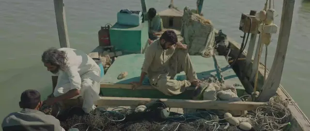
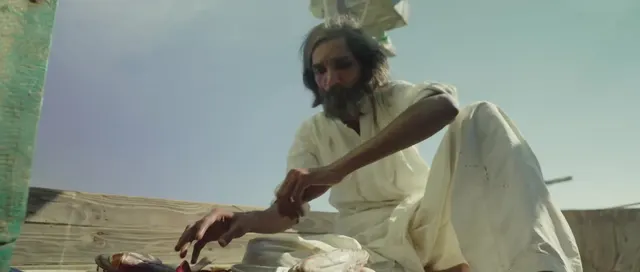
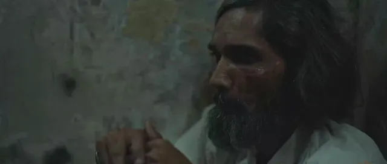
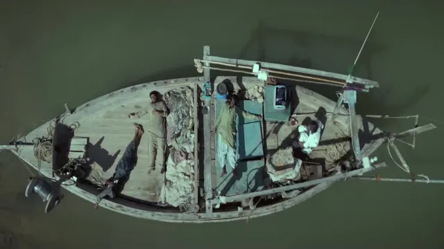
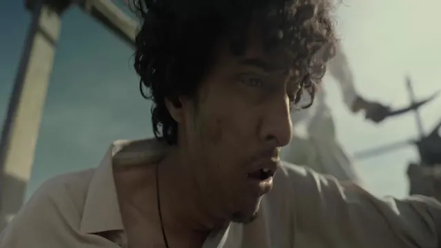
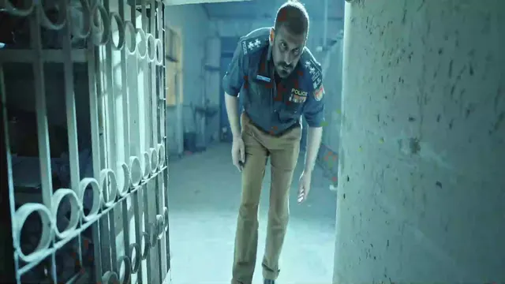
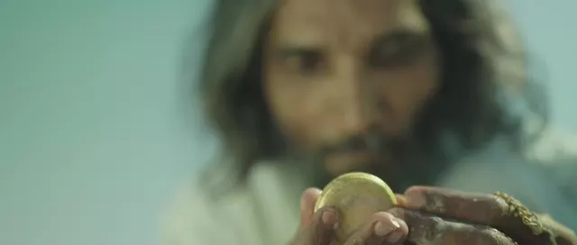
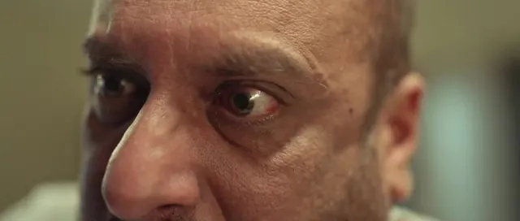
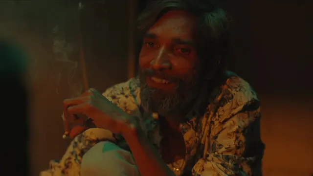
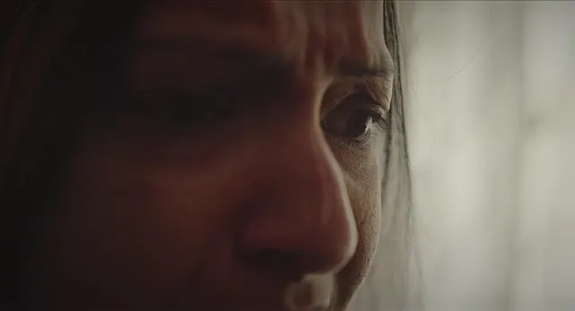
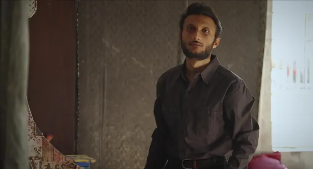
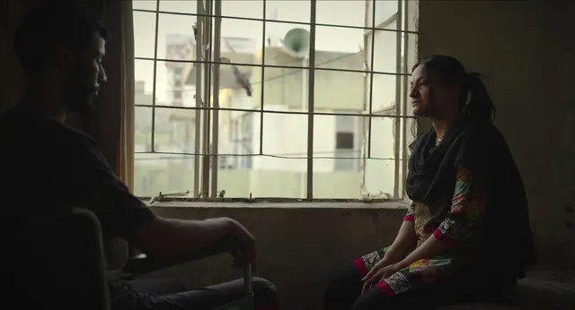
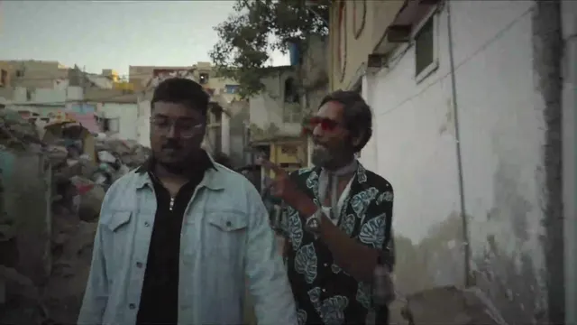
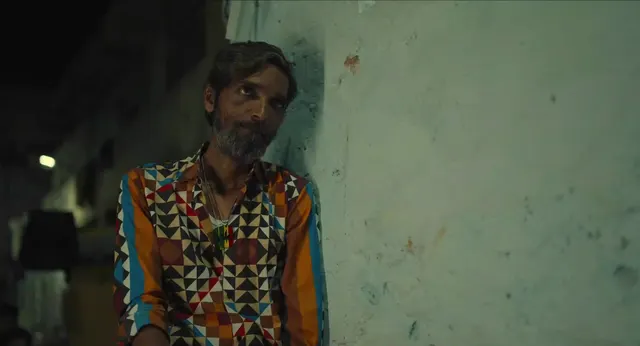
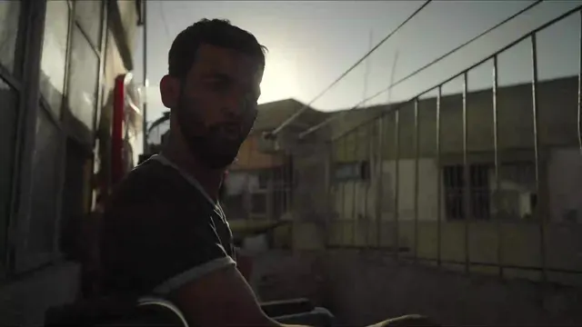
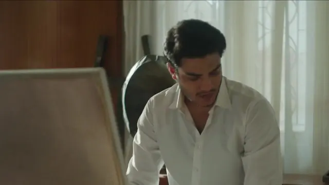
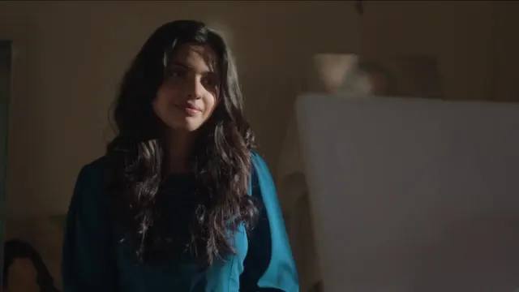
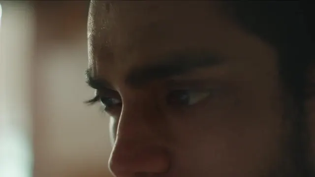
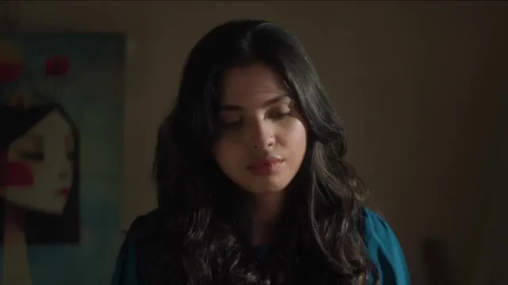
 Selected Frame
Selected Frame Selected Frame
Selected Frame Selected Frame
Selected Frame Selected Frame
Selected Frame Selected Frame
Selected Frame